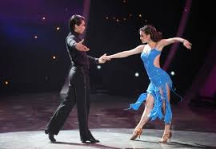
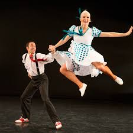

Dansuri sportive
Dansul sportiv înfățișează dansul ca pe o activitate sportivă de echipă (pereche de dansatori).
Vals lent
Este considerat regele de necontestat al dansurilor de societate.
Cha-cha
Dans foarte rapid,sacadat,care lucrează intens musculatura abdomenului şi picioarelor.
Tango
Tango este un dans și gen muzical care a apărut în orașele Buenos Aires, Argentina și Montevideo.

Samba
Icoană a identității naționale din Brazilia.
Rumba
Poate fi interpretat drept o pantomimă a unui act de iubire.
Slow fox
Presupune un contact permanent al unei părţi a tălpii cu podeaua.
Paso doble
Este o dramatizare prin dans a coridei spaniole.
Quickstep
Stilul aparte al acestui dans este dat de elanul fulgerător şi de paşii iuţi. Interpretarea şi tehnica piciorului dau impresia unui zbor uşor şi sprintar.
Jive
Dans ritmat, cu un tempo rapid, o adevarată probă de rezistenţă pentru dansatori.
Salsa
Amestec de ritmuri de origine latino si afro-caraibiană